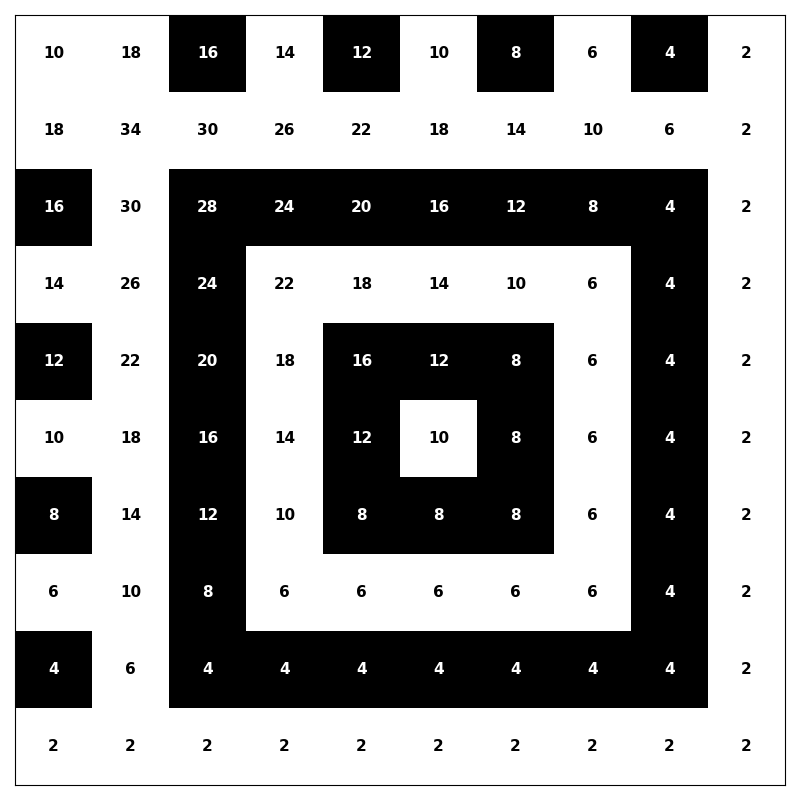
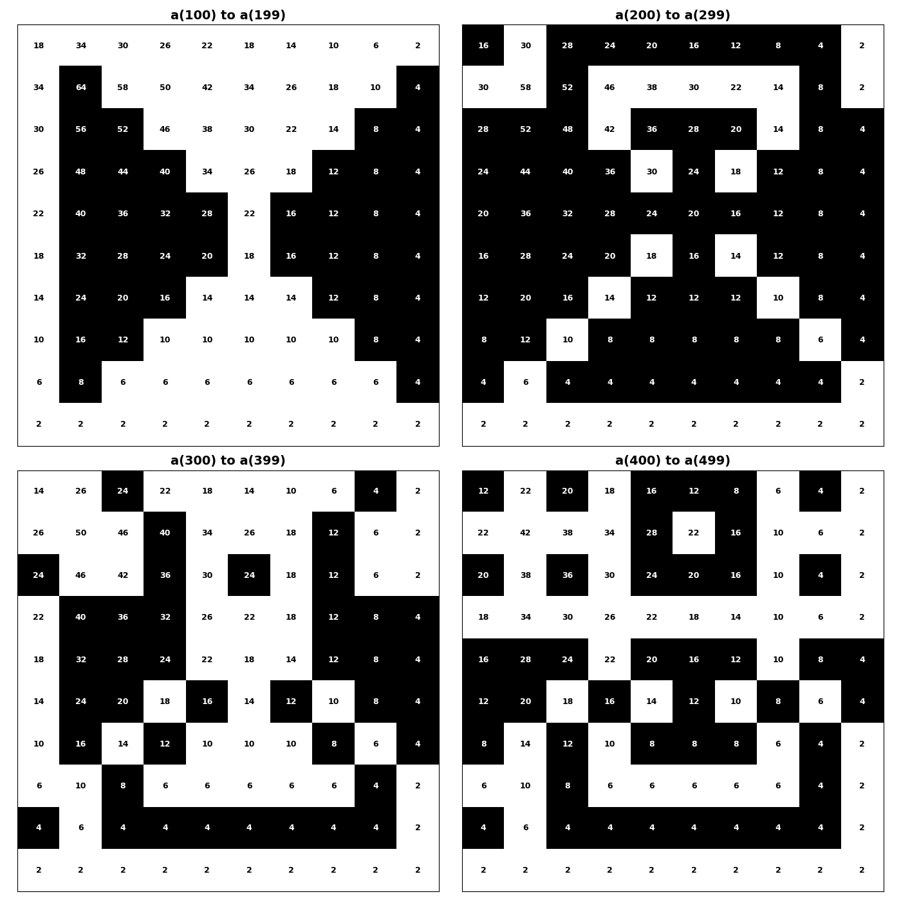

Integer sequences have always fascinated me from the moment I became familiar with them. The rules that generate them (thus I began playing with different rules), the patterns they exhibit (, looking for patterns in them), the formulas for their sums (, and finding the formulas/properties/theorems that'd describe/explain the patterns).
One such encounter was the digit sequence for which this blog exists. I could just list the definition, theorems, and explain them though that'd not be much fun.
It begins with me playing around with the digit sums (summing all the digits of a natural number, like say we've got 123, we can sum the digits to get 1+2+3=6), though as one should realise we aren't limited by predefined definitions and operations, we can very well create new operations and study them (like say we've got 123 then we define an operation which gives 35 = 12+23 (not hard to figure what the rule of the operation here is) or another operation that takes say 1234567890 and gives 8370=1+23+456+7890 (this is just to show that rules can be created and explored thus the limit is only our imagination, though there's no guarantee what patterns, if at all, one would find, thus patience and intuition is needed too).
So it's insightful to abstract the idea, which in this case would be 'a particular operation on digits of a natural number' then changing the variables of the idea as "what if the operations were different or more than one", "what if we take digits in different ways" and so on. So that, I did, multiplication, division, subtraction...(which was the most interesting as multiplication has problems with zeroes (which can of course be bypassed and explored) and division, well it gives rational values (though we can floor the results or use any other operation to get integers that seems too convoluted to have any interesting pattern)). Now subtraction instead of addition can still go many ways depending on how one chooses to explore it. The most obvious first step would be to just find the value by putting a minus sign between each digit as in the digital sum with +.
I was really into concatenating (attaching two numbers to make a single, like say we have 23 and 45 then 2345 is the number we get by concatenating them in order) the digits back then, so at first I tried it with the digital sum with + as follows: say we have 12345 then we sum the consecutive digits and concatenate their sums like this: 1+2= 3, 2+3 = 5, 3+4=7, 4+5=9, the sums are 3,5,7,9 and thus we join them into one as 3579. We can denote this process by a function, say S(n), so S(12345) = 3579, we can apply S to 3579 as well, S(3579) = 81216, applying again S(81216) = 9337 and so on (this could loop as is often the case with such systems or explode to infinity, you can check if you're interested, there are many questions one could ask here to maximise the probability of finding interesting patterns, like "does any number loop back to itself" or "sequence of those numbers for which it loops and their loop length" and so on).
I was more interested in exploring this idea with the minus operation, but the problem arises when we get negative numbers, for example consider this: n=12321, now finding the difference of consecutive digits would get us 1-2 = -1, 2-3 = -1, 3-2 = 1 and 2-1 = 1, we can't just concatenate them as -1-111, that'd just be meaningless. The obvious fix is taking the absolute difference (the absolute value, denoted by |n|, of any number is the positive part/distance from origin, so |-1| would be 1). Now if we take absolute difference in the above example then the resulting number after concatenation would be 1111. Applying the same procedure on 1111 again gives 0. This procedure can be denoted as a function D(n). So D(123) = 11, D(345)= 11 and so on. We see both 123 and 345 give 11 when evaluated at D(n). So the natural question to ask is how many numbers give 11 when evaluated at D? There are infinite such numbers (123, 1123, 11123) thus we have to modify the question a bit to get something meaningful out of it. So we restrict the question to only 3-digit numbers, or in general when asking how many numbers give n (say a k digit number) we only focus on the solutions that are k+1 digit (note that if we chose k+2, k+3, or any other higher digits (higher because lower and same digited numbers would always give output which is strictly lower in digit count, when evaluated at D) the count would be the same!).
So say we wanna find out how many 2 digit numbers give 1 when evaluated at D. The solutions, as one can easily list down, are 10,12,21,23,32,34,43,45,54,56,65,67,76,78,87,89,98, which is 17 in count. You might have noticed that when $d_1d_2$ is a solution then its reverse $d_2d_1$ is also a solution, but that's not true in general. For example $D(123) \neq D(321)$ so they aren't the solutions for the same n.
There's another way we can pair the solutions which is simple, but not obvious from the solution list at first glance. Let's see, say we have 123 and 876 would they both give the same output at D? Yes, they both give 11. What about 101 and 898 would they also give the same output? Yes they both give 11 too. What's the connection between them though? Notice if we subtract each digit from 9 and concatenate we get the other number, for example 9-1=8, 9-0=9, 9-1=8, so 898. In general it's not hard to see that whenever $d_1d_2...d_k$ is a solution then so is its mirrored version $(9-d_1)...(9-d_k)$ is also a solution. But pairs aren't valid for some solutions, like for 98 its mirror is 01 but that's not a 2 digit number. We can work around it to define 01 as a 2 digit number so that every solution has a pair for all n.
We can avoid such convoluted workarounds if we work with tuples, in which even if the first few elements are 0, by definition it is distinct from the tuple you'd get by removing the leading zero elements. A tuple is just an ordered collection of objects denoted as $(x_1,...,x_{k+1})$ where objects are separated and called elements, and the number of elements is called length of the tuple. So the definition changes from
"how many $k+1$ digit numbers give $n = d_1...d_k$ as output when evaluated at $D$"
to "how many length $k+1$ tuples, where each element $x_i \in \{0,1,...,9\}$ and $|x_i - x_{i+1}| = d_i$ where $d_i$ is the ith digit of $n = d_1...d_k$."
If this definition is hard to understand, note that we're just equating the absolute difference of two consecutive elements of the tuple with the corresponding digit of $n$, which is exactly the same as the D function just stated differently.
Let $a(n)$ be the count of such tuples for any $n \in \{0,1,2,...\}$. The first thing that is obvious is:
If we look at the terms of this sequence,
The first thing that the terms reveal is that it's right to group them as 10 terms. Note that $a(1) = a(10)$ and $a(2) = a(20)$, in general zeroes don't change the value of $a(n)$.
Now another question is, given that they are all even, what would happen if we divide them by 2. The sequence would then have both even and odd terms, but is there anything interesting in there? Let's see. To see the parity we decided to arrange the first 100 terms on a 10 by 10 grid and highlight cells mod 2, why? As we've noticed, grouping them as a collection of terms seems only natural so arranging them on a grid is obvious if one gets the idea to highlight it visually.
So what is the resulting grid? Let's see

Isn't it interesting? Now given the symmetric pattern we're naturally curious to see what the next 100 terms if plotted mod 4 (which is the same as dividing by 2 and highlighting even and odd cells) would look like. Following are the 4 grids for the next 400 terms:

What can explain these patterns? There are many interesting reasons behind it. Firstly, note that ignoring the first column (which is just a copy of the 6th column) the remaining columns are symmetric (along the 6th column or when $d_k = 5$), which implies the terms have the same parity, we can denote that mathematically as $a(d_1d_2...d_k) \equiv a(d_1d_2...d_{k'}) \pmod{4}$, where $d_{k'}$ is $10-d_k$.
Let's prove this:
This explains the symmetry. But why each grid has specific pattern can also be analysed mathematically (I'll explain that in the next blog).